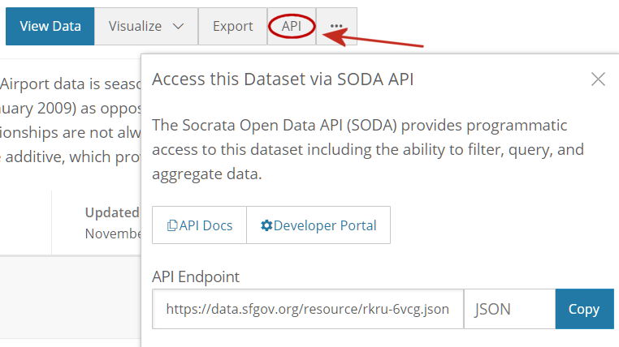
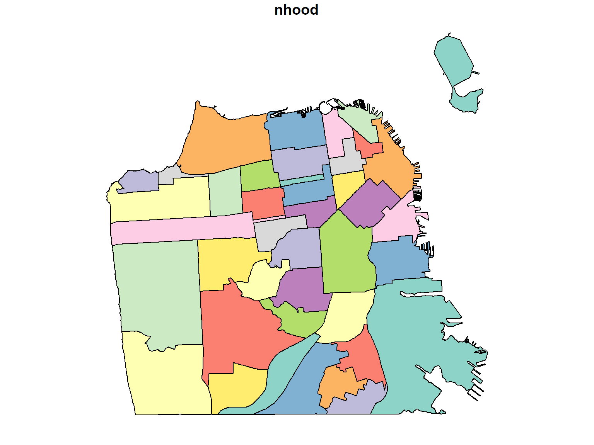

API stands for Application Programming Interface.
It is both a translator and a messenger between two different programs.
Common Uses of APIs
DataSF.org is built upon Socrata Open Data.
The Socrata Open Data API (SODA) allows you to programmatically access a wealth of open data resources from governments, non-profits, and NGOs around the world.
Every datasets has its own URL or endpoint: For example,
https://data.ct.gov/resource/y6p2-px98.json

Human-readable URL:
https://soda.demo.socrata.com/dataset/USGS-Earthquakes-for-2012-11-01-API/4334-bgaj
SoDA URL:
http://soda.demo.socrata.com/resource/4334-bgaj.csv
Take note of the extension (csv, json. geojson, etc.). The RSocrata package has functions to import data from a SODA API endpoint.
library(RSocrata)
df <- read.socrata("http://soda.demo.socrata.com/resource/4334-bgaj.csv")
head(df)## Source Earthquake.ID Version Datetime Magnitude Depth
## 1 nn 00388610 9 2012-09-14 22:38:01 2.7 7.6
## 2 ci 15215753 0 2012-09-14 22:14:45 1.5 10.6
## 3 nc 71842370 0 2012-09-14 22:14:21 1.4 0.0
## 4 nn 00388609 9 2012-09-14 22:10:19 1.5 8.2
## 5 nn 00388607 9 2012-09-14 22:06:11 1.7 6.4
## 6 pr 12258012 0 2012-09-14 21:28:55 3.1 20.0
## Number.of.Stations Region Location
## 1 15 Nevada (41.1085, -117.6135)
## 2 35 Southern California (34.525, -118.1527)
## 3 21 Northern California (38.8023, -122.7685)
## 4 29 Central California (36.9447, -117.6778)
## 5 29 Central California (36.9417, -117.6903)
## 6 6 north of the Virgin Islands (19.7859, -64.0849)json is another file format. It is very flexible but often is used to save a two-dimensional table. Let's load the movie locations dataset from SFData.
movie_loc_url <- "https://data.sfgov.org/resource/wwmu-gmzc.json"
movie_loc_df <- read.socrata(movie_loc_url, app_token="blM04kZ1D6AL2jNbK8o7VWiEj")
head(movie_loc_df)## actor_1 actor_2 actor_3 director
## 1 Siddarth Nithya Menon Priya Anand Jayendra
## 2 Siddarth Nithya Menon Priya Anand Jayendra
## 3 Siddarth Nithya Menon Priya Anand Jayendra
## 4 Siddarth Nithya Menon Priya Anand Jayendra
## 5 Siddarth Nithya Menon Priya Anand Jayendra
## 6 Siddarth Nithya Menon Priya Anand Jayendra
## locations production_company release_year
## 1 Epic Roasthouse (399 Embarcadero) SPI Cinemas 2011
## 2 Mason & California Streets (Nob Hill) SPI Cinemas 2011
## 3 Justin Herman Plaza SPI Cinemas 2011
## 4 200 block Market Street SPI Cinemas 2011
## 5 City Hall SPI Cinemas 2011
## 6 Polk & Larkin Streets SPI Cinemas 2011
## title writer distributor
## 1 180 Umarji Anuradha, Jayendra, Aarthi Sriram, & Suba <NA>
## 2 180 Umarji Anuradha, Jayendra, Aarthi Sriram, & Suba <NA>
## 3 180 Umarji Anuradha, Jayendra, Aarthi Sriram, & Suba <NA>
## 4 180 Umarji Anuradha, Jayendra, Aarthi Sriram, & Suba <NA>
## 5 180 Umarji Anuradha, Jayendra, Aarthi Sriram, & Suba <NA>
## 6 180 Umarji Anuradha, Jayendra, Aarthi Sriram, & Suba <NA>
## fun_facts
## 1 <NA>
## 2 <NA>
## 3 <NA>
## 4 <NA>
## 5 <NA>
## 6 <NA>Note two things:
API Tokens
Many API use tokens or keys to regulate usage or require a subscription. A token is a little bit like a password.
SFData.org does not require tokens, but you can get throttled if too many people use it at once. Create a token at the Developer Portal. For today we can use the one above.
Importing polygon boundaries
Neighborhood boundaries can be imported as well. Look the SODA rest point:
https://data.sfgov.org/resource/xfcw-9evu.json
RSocrata does not currently know how to import a polygon layer. But you can get the geojson version of the data using the sf package.
library(sf)## Linking to GEOS 3.6.1, GDAL 2.2.3, PROJ 4.9.3nb_bnd = read_sf("https://data.sfgov.org/resource/xfcw-9evu.geojson")
plot(nb_bnd)